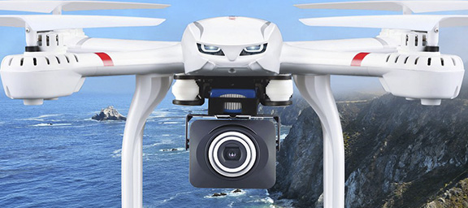
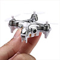

Los drones, la máquina herramienta 4.0
Fecha: 28/05/2018
Drone By Drone es una firma bilbaína que, con drones y realidad virtual y aumentada, puede ayudar a controlar la seguridad en las empresas; Guruzpe, por su parte, se dedica a lo tornos horizontales.
En la Bienal de Máquina Herramienta hay una gran diversidad de maquinaria. Entre ellos tenemos los 'insectos metálicos', los drones, que están presentes en el pabellón 6 del BEC, dentro del apartado dedicado a la máquina herramienta 4.0. Ander García, uno de los fundadores de Drone by Drone, nos explica cómo combinar los drones con la realidad aumentada y virtual para crear una herramienta muy útil en la empresa. Pueden detectar problemas de seguridad o de salud en una empresa, como detectar si un trabajador no lleva puestos elementos de seguridad como casco, chaleco o botas. Es un trabajo en fase de pruebas pero que avanza a buena velocidad.
Los drones también permiten hacer trabajos arriesgados para el ser humano, como la revisión de fachadas o estructuras de los edificios de producción. Propuestas muy interesantes para las empresas que hacen que estos aparatos sean una apuesta de futuro, pero también de presente, en la máquina herramienta.
También hablamos con el responsable comercial de Guruzpe, David Castroviejo. Guruzpe es una empresa que trabaja con tornos horizontales, una máquina herramienta que permiten hacer piezas de gran tamaño como turbinas de barcos, por ejemplo. Nos explica cómo se realiza la venta en una feria como la Bienal ('normalmente, el cliente ya nos ha conocido, aquí se cierran operaciones que llevas trabajando mucho tiempo', señala); y, sobre todo, cuáles son sus principales mercados. Unos mercados en los que entran con un trabajo casi a medida: 'El cliente viene con sus problemas, con sus planos... y nosotros trabajamos en la solución específica'.
Fuente
- www.eitb.eus
- Etiam vel felis at lorem sed viverra.
Xuxen ya es compatible con Word 2016
Fecha: 28/05/2018
El programa ha introducido cambios en su nueva actualización: compatibilidad con las últimas versiones de Microsoft Office e incorporación de cambios lingüísticos de Euskaltzaindia y Elhuyar.
El grupo de investigación Ixa y Elhuyar han lanzado Xuxen 5.1, la nueva versión del corrector ortográfico, que será compatible con Word 2016. Además, esta actualización ha incorporado los últimos cambios que se han recogido en los diccionarios de Euskaltzaindia y Elhuyar para detectar errores y proponer correcciones.
Desde el lanzamiento de Xuxen, Microsoft ha renovado sus paquetes de Office, y ante la necesidad de hacer compatibles ambos programas han preparado Xuxen 5.1. Esta versión identificará los errores y las correcciones al igual que la anterior. El programa subrayará en rojo los errores ortográficos, y en verde/azul los errores gramaticales y las palabras que no coinciden con las preferencias de Euskaltzaindia.
La versión de Xuxen se emplea sobre todo en Word, pero también es apta para los programas PowerPoint, Outlook, LibreOffice, OpenOffice, y navegadores web como Firefox, Chrome e Internet Explorer, Adobe InDesign y Hunspell.
Xuxen se podrá usar instalado en el ordenador u on line. Para utilizar Xuxen en mensajes de correo electrónico, foros de Internet y blogs, habrá que descargar la versión adecuada para el navegador.
Fuente
- www.eitb.eus
- Etiam vel felis at lorem sed viverra.